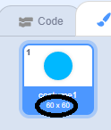
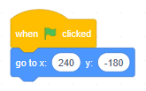
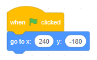
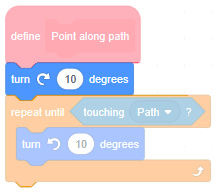
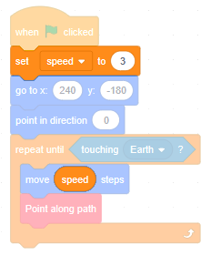

Introduction
This module is the first in a series of modules building an asteroid defence game, in which you need to destroy asteroids on a collision-course with planet Earth. Today we'll destroy them by clicking on them as they fly through space — in a later module we'll build turrets to destroy them automatically as they fly past.
Planet Earth
Start from an empty Scratch project (rpf.io/scratch-new — remember to delete the cat sprite).
Paint the backdrop black.
Paint a new sprite, named 'Earth'. Zoom in until the chequered background becomes large, then select the Circle tool, change the Fill colour to blue, the Outline thickness to 0, and draw a circle (remembering to hold down the shift key to ensure it's a perfect circle). It should be about 60 × 60 pixels (it doesn't need to be exact) — you can see the sizes of costumes (in pixels) by looking in the costumes pane:
Snap the circle to the centre of the drawing area. Then select the Brush tool, change the Fill colour to green, and draw some continents (being careful not to spill outside the blue circle):
Use the Select tool to copy and paste the blue circle, change the copy's Fill colour to a radial gradient — transparent at the centre and black at the edge — and snap it to the centre of the drawing area:
Finally, draw another circle, slightly larger than the planet, this time going from grey at the centre to transparent at the edge. This is Earth's atmosphere — send it to the back and snap it to the centre of the drawing area:
Does your sprite look like planet Earth?
Good. Drag it to the bottom left of the stage — it should be around (-160, -100)... that's a quick way of saying x should be around -160 and y should be around -100 (the first number in the brackets is the x position, the second number is the y position):

Now let's draw a path for the asteroids to fly along.
Path
Paint a new sprite named 'Path'. Set it to (0, 0):
Select the Line tool, change the Outline colour to a very dark grey, and set the thickness to 2. Draw a line from the very bottom right corner to near the bottom left corner.
Then use the Reshape tool to position the left point at Earth's centre — keep checking the stage to help you position it:
Drag the left point...... until it's over Earth's centre.
Do asteroids usually travel in straight lines, or in curves?
Use the Reshape tool to make the straight line into an arc that gently curves down. Don't move either of the two endpoints — click in the middle of the line to create a new point and drag it upwards, using the point's handles to make the curve nice and smooth:
Switch to the Code tab, find the go to front layer block, change it to go to back layer and click it. What happened?
Let's make an asteroid fly along this path.
Asteroid
Paint a new sprite named 'Asteroid'. Select the Circle tool and set the Fill colour to a radial gradient of grey-brown going to a slightly darker grey-brown. Set the Outline thickness to 0 and draw a circle about 20 × 20 pixels, snapped to the centre:
Use the Reshape tool to make it a bit jagged:
Add a drop shadow (that is, a circle, black at the centre fading to transparent at the edge, slightly larger than the asteroid shape, sent to the back):
We'll see this drop shadow better when we have lots of asteroids coming so thick and fast that they overlap each other — that's coming in a later module.
Switch to the Code tab, and when the green flag is clicked the Asteroid should go to (240, -180):
 

Click the green flag. Where is the Asteroid now?
Point the Asteroid in direction 0. Move 3 steps repeatedly until it touches Earth:
Click the green flag. What happens?
We want our asteroid to fly along the curved path that we drew, not in a straight line. This means that we'll need to keep changing the direction of the asteroid such that it points along the path.
I need to show you something. Choose a new sprite (don't paint your own this time) named 'Rocketship'. Add a forever loop and nest a point towards mouse-pointer inside:
Click to run the script. Move your mouse around the stage. What happens?
Right — the rocket ship turns such that its right side points towards the mouse pointer.
Switch to the Costume tab, use Ctrl + A to select everything, then rotate the image until it points right (remember to hold down the shift key so that it snaps to the nearest 45 degree angle):
Now move your mouse around the stage. What happens?
Remember this. A sprite's forwards direction is to the right.
Ok. Delete the Rocketship sprite. We've learned our lesson.
Paint a new costume in the Asteroid sprite named 'path finder'. Zoom in until the chequered background becomes large, then draw a tiny circle, 2 × 2 pixels, filled with grey. Snap it to the centre, then use the arrow keys to move it two chequered squares to the right:
That tiny circle is...
Correct. So if we turn that costume until it touches the path, we know that we've turned the sprite to point along the path:
In the Code tab, make a new Block named Point along path, running without screen refresh. In its definition, repeatedly turn 10 degrees anti-clockwise until touching Path, and call it after the asteroid has moved:
Notice that we've assumed that we're pointing above the path and that we need to turn downwards. That's not always true and, if not, we might end up flying backwards:
How could we fix this bug?
That will help. Add that block:
Click the green flag. What do you see? (You might need full screen mode to see anything.)
We forgot to change back to the proper costume! Add a block at the end to fix that, and another block to ensure that we're using the path finder costume at the start:
Click the green flag. What happens?
Good. Let's speed it up.
Speed
Make a variable named speed, for this sprite only, and uncheck its box.
Set it to 3 when the green flag is clicked, and move speed steps instead of moving 3 steps:
Have we changed the behaviour of the asteroid?
This is what's known as refactoring. The asteroid used to move 3 steps at a time; it still moves 3 steps at a time. No change in behaviour.
So why did we do it?
Because using a variable will make it easier for us in a later module when we have many asteroids, and we want them to have different speeds.
For now, change the speed to 5:
Click the green flag. Does the asteroid move faster?
Change the speed to 10. Does it move even faster?
Keep increasing the speed and testing the asteroid's flight. At some point you will see the asteroid flip around and fly back and forth.
That's because the bug fix we added — turning clockwise before repeatedly turning anticlockwise — only helped. If the asteroid travels too fast, or the path has too sharp a curve, a proper bug fix because more complicated.
Change the speed back to 3.
It's time to turn this into a game.
Defence
Add a when this sprite clicked and snap a hide underneath. Remember to show the asteroid when the green flag is clicked.
Click the full screen button, click the green flag, and try to click the asteroid before it crashes into Earth. What happens when you click it?
Great. If the game is too hard, use a slower speed or make the asteroid larger. If it's too easy, set a faster speed (remembering to stay under the flip-around speed).
Tip: a game should be challenging enough that players are pleased when they win, but not so challenging that they become frustrated.
In the next module, we'll send lots of asteroids flying towards Earth (rather than just one) and we'll learn how to display a beautiful score (rather than Scratch's orange variable readout).
Next steps
Save your project.
In the next few modules we will:
- earn cash for destroying asteroids
- improve the art with a starry background and explosion effects
- give Earth a health bar
- make a 'turret' to automatically shoot asteroids
- create a shop for buying extra turrets
Feel free to try out any of those ideas beforehand, or to try a different idea of your own instead.
What did you think of this module?
I didn't like it

It was OK

I loved it